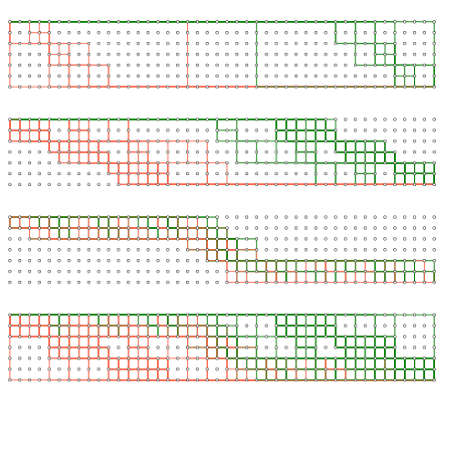

About

I teach non-curriculum and experimental mathematics
topics to high school students: combinatorics, logic,
finite mathematics, number theory, functional programming.
I have been doing so for almost ten years.
Plans for future topics: problem-solving training using
Russian textbooks. I will also be doing informatics problem
solving with students who are interested.
My interests are mathematics, computer programming, chess,
literature, yoga and kettlebell lifting.
Contact me by changing this to a valid email address:
tedszy at gmail dot com